4.1 基本流程
决策树是基于树结构来进行决策的，这恰是人类在面临决策问题时一种很自然的处理机制
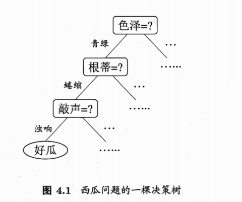
一棵树包含一个根节点，若干个内部节点和若干个叶节点，叶节点对应决策结果，其他节点对应一个属性测试
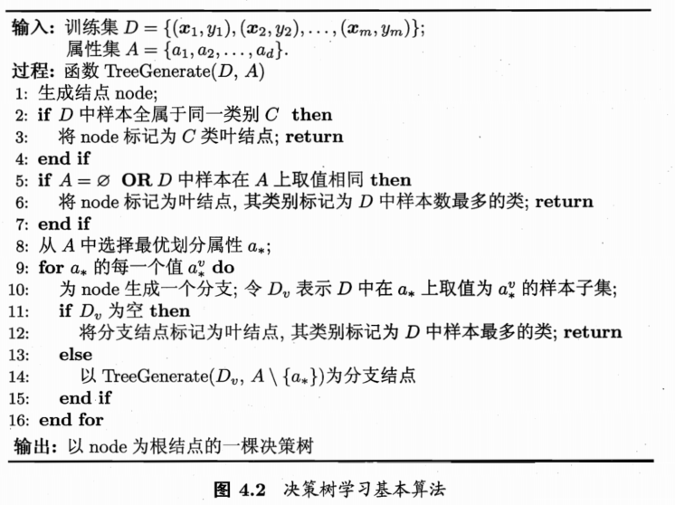
决策树是一个递归过程，有三种情况导致递归返回：
- 当前样本包含的样本全属于同一类别，无需划分
- 当前样本属性集为空，或是所有样本在所有属性上取值相同，无法划分(取当前节点样本中类别最多的那一类作为分类)
- 当前节点包含的样本集合为空，不能划分(取父节点样本类别最多的作为分类)
4.2 划分选择
决策学习的关键是如何选择最优划分属性，我们希望随着划分过程的不断进行，结点的纯度(purity)越来越高
4.2.1 信息增益
信息熵(information entropy)是度量样本集合纯度的常用指标
假定当前样本集合D中第k类样本所占的比例为 \(p_k (k=1,2,…,|Y|)\),则D的信息熵为:
$$Ent(D) = -\sum_{k=1}^{|Y|} p_k log_2p_k$$
Ent(D)的值越小，D的纯度越高(约定：若\(p=0 则 plog_2p=0 \))
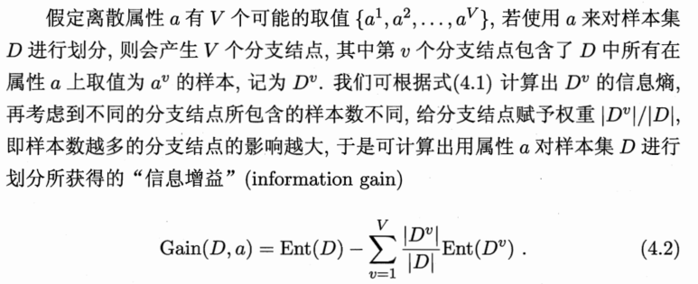
一般而言，信息增益越大，则意味着用属性a来进行划分所获得的纯度提升越大：
$$a_*=arg \ max_{a \in A} \ Gain(D,a)$$
ID3就是以信息增益为准则来选择划分属性的
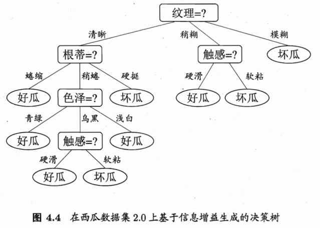
4.2.2 增益率
实际上，信息增益对可取值数目较多的属性有所偏好(如编号，在西瓜集中若以编号为划分属性，则其信息增益最大)，为减少由于偏好而带来的不利影响，C4.5算法使用增益率(gain ratio)来选择最优划分属性
$$Gain_ratio(D,a)=\frac{Gain(D,a)}{IV(a)}$$
其中:
$$IV(a)=-\sum_{v=1}^V\frac{|D^v|}{|D|}log_2\frac{|D^v|}{|D|}$$
称为属性a的固有值(intrinsic value),属性a的可能数目越多，则IV(a)的值通常越大
然而，增益率准则对可取值数目较少的属性有所偏好，C4.5采用的是先从候选划分属性中找出信息增益高于平均水平的属性，再从中选择增益率最高的
4.2.3 基尼指数
CART(Classification and Regression Tree)使用基尼指数(Gini index)来选择划分属性，数据集的纯度可用基尼值来度量
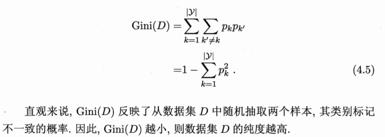
属性a的基尼指数定义为
$$Gini_index(D,a)=\sum_{v=1}^V\frac{|D^v|}{|D|}Gini(D^v)$$
在属性集合A中寻找:
$$a_*= arg \ min_{a \in A} \ Gini_index(D,a)$$
4.3 剪枝处理
剪枝(pruning)是决策树学习算法对付过拟合的主要手段，基本策略有预剪枝(prepruning)和后剪枝(post-pruning)
- 预剪枝：在决策树的生成过程中，对每个节点在划分前先进行估计，若当前节点的划分不能带来泛化性能提升则停止划分
- 后剪枝：先生成一个完整的树，然后自底向上对非叶节点考察，若将该节点对应的子数替换为叶节点能提升泛化性能则替换
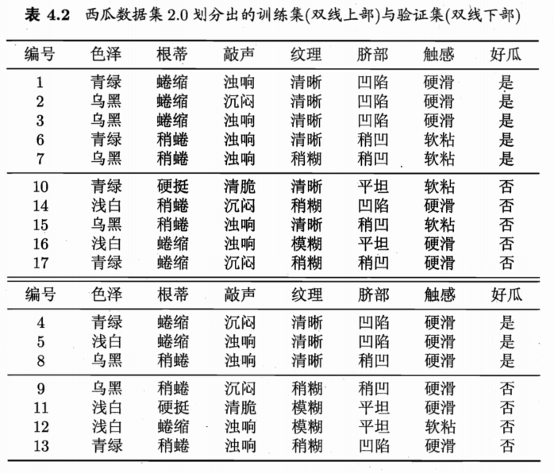
4.3.1 预剪枝
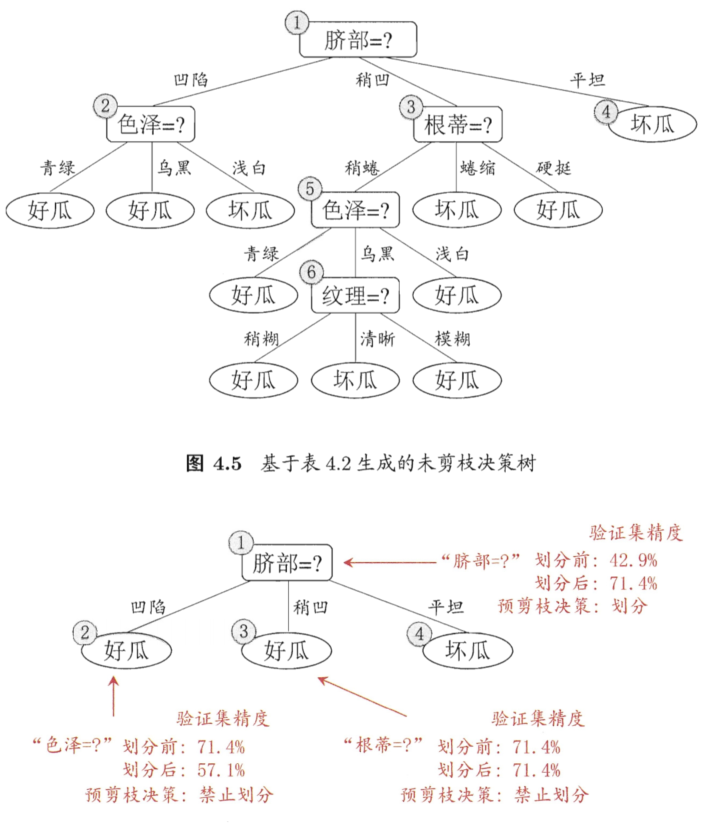
预剪枝使决策树的很多分支都没有展开，不仅降低了过拟合的风险，还显著减少了训练时间和测试时间，但是可能会引起过拟合
4.3.2 后剪枝
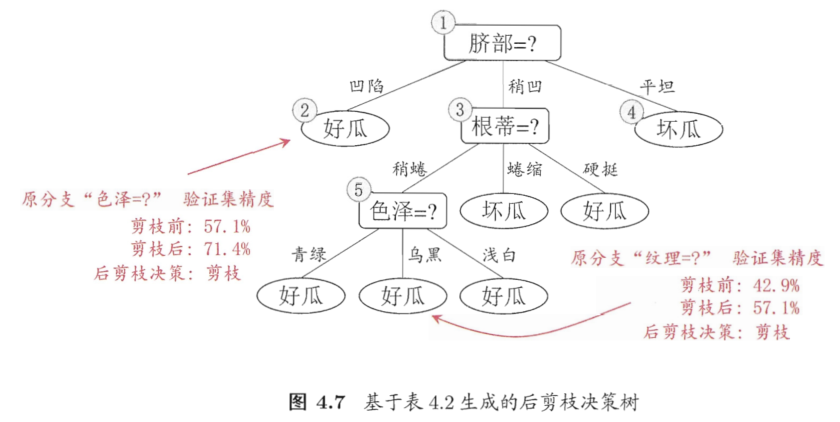
后剪枝通常比预剪枝保留更多的分值，一般情况下，后剪枝欠拟合风险很小，泛化性能优于预剪枝，但其训练时间比未剪枝和预剪枝都要大得多
4.4 连续与缺失值
4.4.1 连续值处理
前面讨论都是基于离散属性来生成决策树，对于连续属性可取数值不再有限，此时可以用连续属性离散化技术
最简单的策略:二分法(bi-partition),这正是C4.5算法采用的机制
对连续属性a，我们可考察包含n-1个元素的候选划分点集合：
$$T_a = \left\{\frac{a_i+a_{i+1}}{2}\ | \ 1 \leq i \leq n-1 \right\}$$
即把区间\([a_i,a_{i+1}) \)的中位点作为候选划分点，然后就可像离散属性值一样来考察这些点：
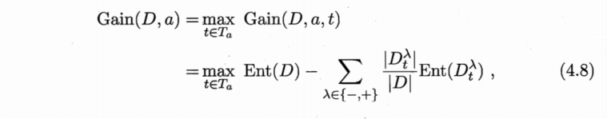
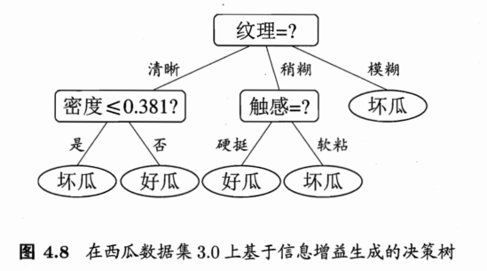
需要注意的是，与离散属性不同，若当前节点划分属性为连续属性，该属性仍可作为其后代节点的划分属性
4.4.2 缺失值处理
现实任务中常会遇到不完整样本，即样本的某些属性缺失
- 如何在属性值缺失的情况下进行划分属性的选择？
- 给定划分属性，若样本在该属性上的值缺失，如何对样本进行划分？
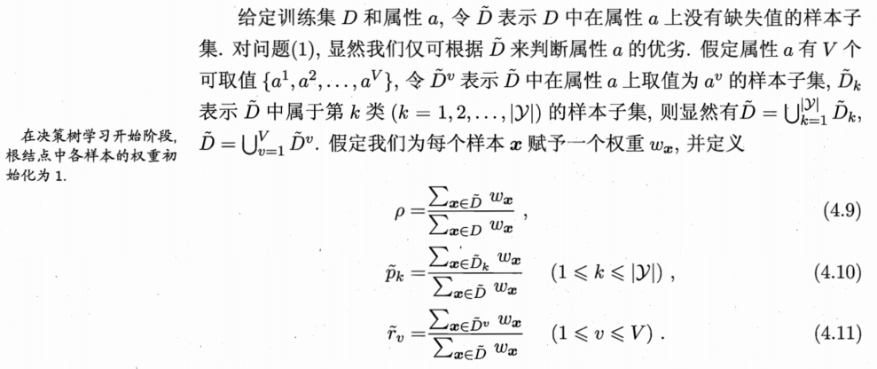
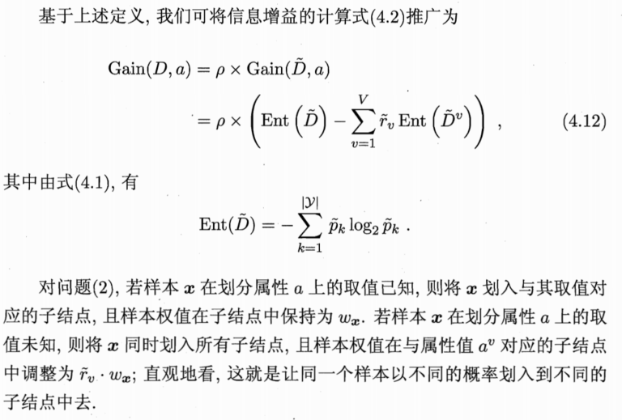
4.5 多变量决策树
决策树所形成的分类边界有一个明显的特点：轴平行(axis-parallel),即它的分类边界由若干个与坐标轴平行的分段组成
这样的分类边界有较好的解释性，因为每段划分都直接对应了某个属性取值，但在分类任务比较复杂时，必须使用多段划分才能获得较好的近似
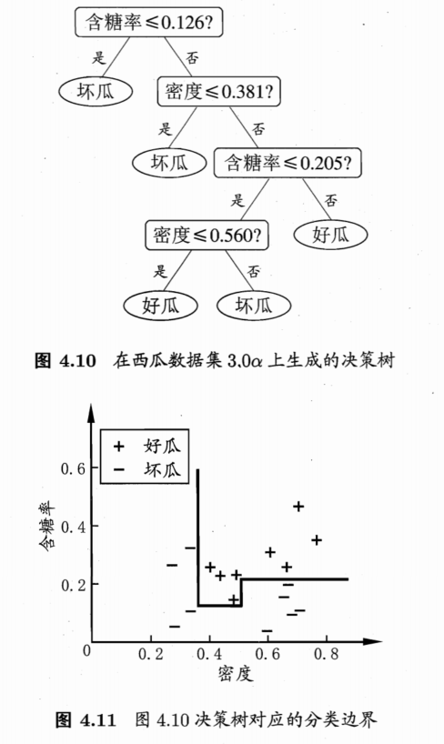
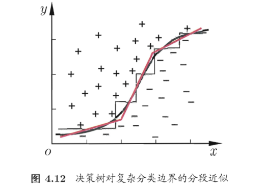
但若能使用斜的划分边界，决策树模型将大大简化
多变量决策树(multivariate decision tree)就是能实现斜划分甚至更复杂划分的决策树(亦称斜决策树 oblique decision tree)
在此类决策树中，非叶节点不再是仅针对某个属性，而是针对属性的线性组合进行测试，每个非叶节点是一个形如\(\sum_{i=1}^d \ w_ia_i=t \)的线性分类器，\(w_i \) 和 t可在该结点所含的样本集和属性集上学得，它不是为每个非叶节点寻找一个最优划分属性，而是试图建立一个合适的线性分类器
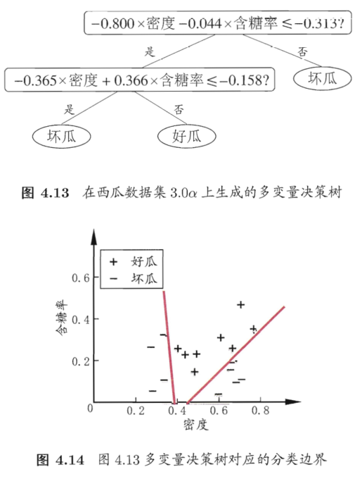
4.6 阅读材料
决策树最著名的算法代表：ID3,C4.5,CART
除了信息增益，增益率，基尼指数外，还有一些其他的准则用于决策树划分，但是对泛化性能影响有限
剪枝方法和程度对决策树的泛化性能影响显著
多变量决策树算法主要有：OC1
感知机树在决策树的每个叶节点上训练一个感知机，还有的算法直接在叶节点上嵌入多层神经网络(how?再引入其他属性？)
有一些决策树算法可以进行增量学习(incremental learning),在接收到新样本后可对已学得模型进行调整，而不用完全学习，代表性算法:ID4,ITI